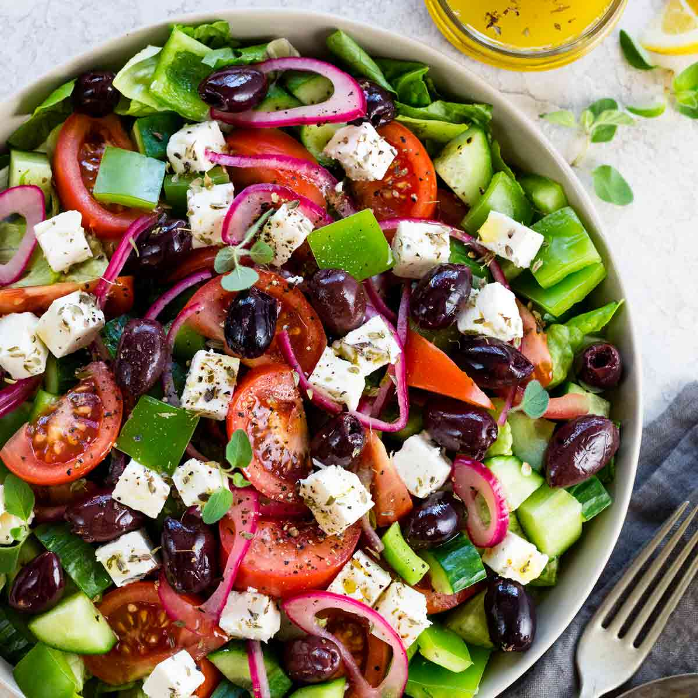
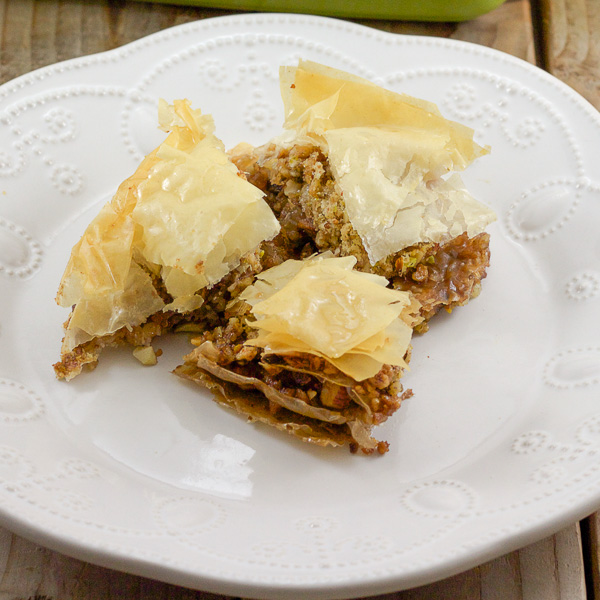

Greek food is a Mediterranean cuisine. It is strongly influenced by Ottoman cuisine and thus, especially cuisine of Anatolian Greeks shares foods such as baklava, tzatziki, gyro, moussaka, dolmades, yuvarlakia, and keftethes with the neighboring countries. Here are some yummy Greek dishes for you to make at home!

A nice side dish to go with it
